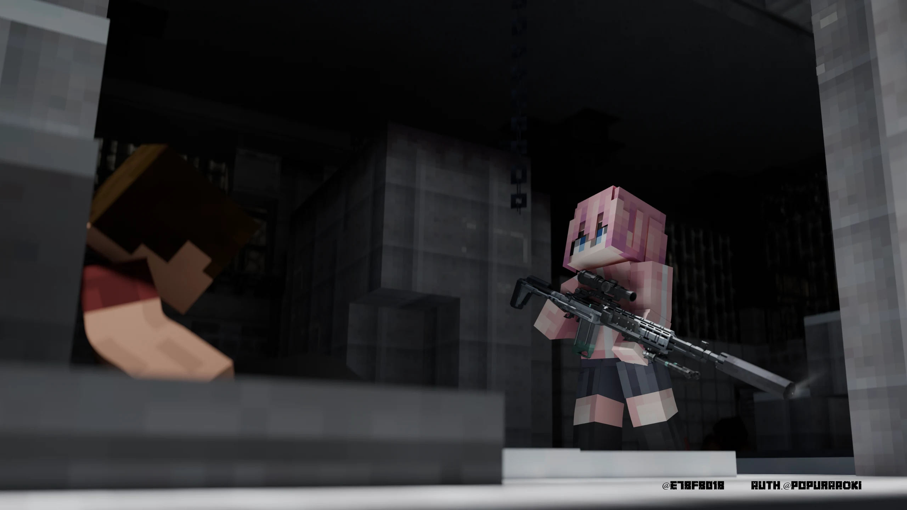

冲锋团队竞技
守住阵线。向前推进。
- 交战
- 团队对抗
- 复活
- 固定基地
- 目标
- 击杀得分
行动要点
以己方基地为稳固依托，与队友协同向前推进。消灭敌对目标积累团队积分；阵亡后重整防线快速返场，以密集攻势撕开对手战线。

02作战档案
守住阵线。向前推进。
以己方基地为稳固依托，与队友协同向前推进。消灭敌对目标积累团队积分；阵亡后重整防线快速返场，以密集攻势撕开对手战线。
03世界记录
在联合历的世界里，人类曾成功将古老的空间传说转化为现代工业。红石能源驱动着电工与重型机械，下界交通将千里之遥缩减至八分之一，成体系的公共行政与科学探索让人类误以为已经完全掌握了世界的规则。
联合历 102 年秋，归航实验引发的规则级量子潮汐顺着空间拓扑席卷全球。各大工业下界门稳定芯片瞬间烧毁，空间折叠优势沦为毁灭性的毒气倒灌；而真正摧毁文明的，是随之而来的凶猛尸潮——通过撕咬与体液传播的狂暴感染，以数百倍于毒雾蔓延的速度，在数周内彻底击穿了全大陆的防御体系。
灾变之后，通信阻断，大陆陷入长达十数年的漫长末世。联合政府残部各自为政，屏障科技集团分裂割据。我们作为回归组织分散各地的留存节点，仍在废墟短波电波中整理记录，试着为仍在废墟中扣动扳机的幸存者接续真相与战术指引。
REGRESSION / 留存节点04部署须知
模组部署：客户端与服务端需保持模组与版本一致；体验僵尸玩法需额外装载 Zombies 独立附属。
战局筹备：服主配置地图、出生点与模式设施；玩家入房准备并投票开局。进入交火区域前请妥善存放随身物资。